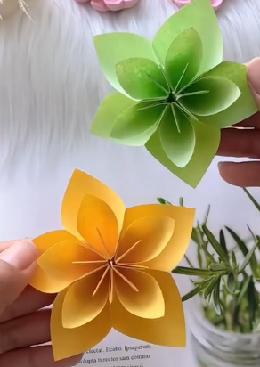
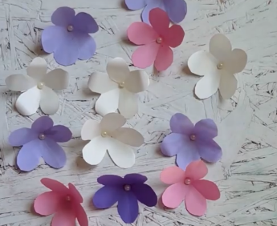
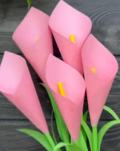
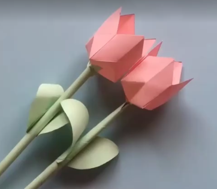

Flor de pétalos doblados
Una flor con pétalos que se forman mediante dobleces y se unen para crear una figura con volumen.
Dificultad: Fácil
Materiales: Papel de colores y pegamento.
Ver videotutorialEn esta sección encontrarás algunos videotutoriales para aprender a crear flores de papel. Puedes seguir los pasos a tu propio ritmo, pausar los videos y repetir los dobleces las veces que necesites.

Una flor con pétalos que se forman mediante dobleces y se unen para crear una figura con volumen.
Dificultad: Fácil
Materiales: Papel de colores y pegamento.
Ver videotutorial
Pequeñas flores que puedes utilizar para decorar tarjetas, regalos y otras manualidades.
Dificultad: Muy fácil
Materiales: Papel de colores, tijeras y pegamento.
Ver videotutorial
Una flor de forma sencilla que puedes acompañar con un tallo y algunos detalles decorativos.
Dificultad: Fácil
Materiales: Papel de colores, tijeras y pegamento.
Ver videotutorial
Aprende a crear tulipanes con dobleces de papel y agrega tallos y hojas para formar un pequeño ramo.
Dificultad: Fácil
Materiales: Papel de colores y pegamento.
Ver videotutorialLos videotutoriales pertenecen a sus respectivos creadores y se encuentran disponibles en Pinterest.